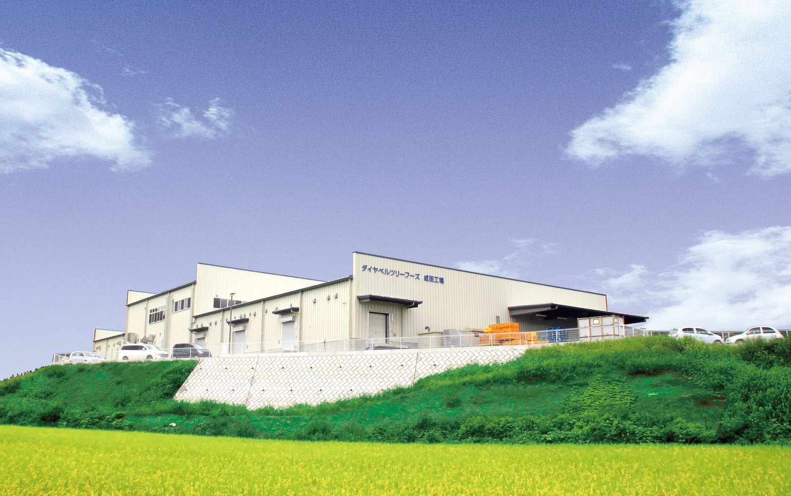
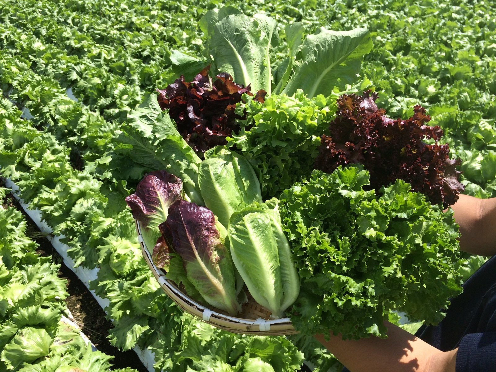
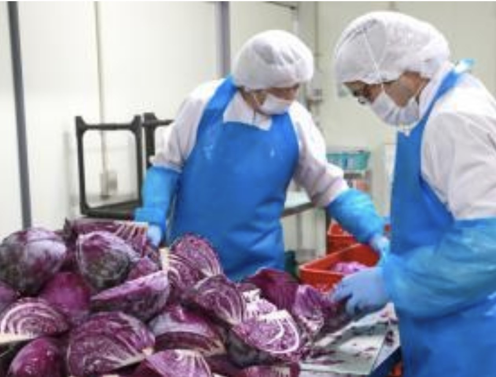
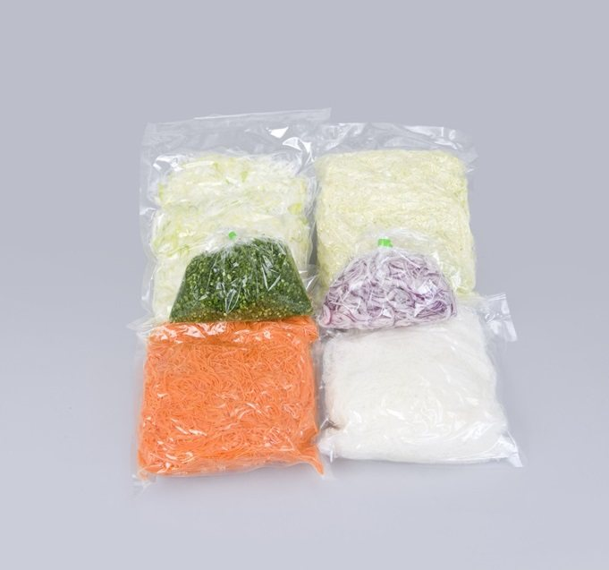
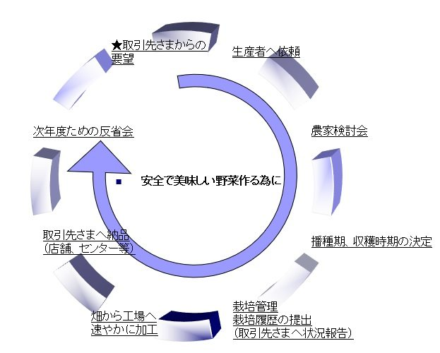
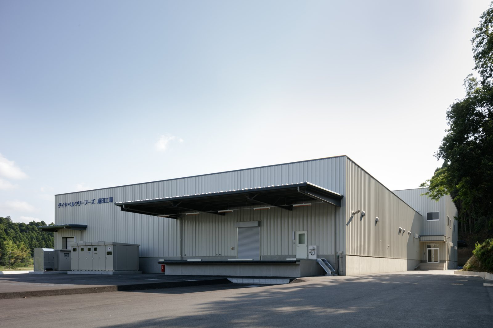

カット野菜製造｜千葉県山武郡芝山町
カット野菜製造｜千葉県山武郡芝山町
当社は、野菜の一次加工、二次加工（取引先様の規格に合わせた加工）及び最終加工（商品化）した物の販売を中心にしています。ホール物・カップサラダなども製造可能です。

千切り・短冊・乱切り・輪切り・型抜き。当社は取引先様の規格に合わせた二次加工を中心にしており、小ねぎの輪切りは1mm〜10mmまで対応しています。
2008年から野菜原料の産地開拓を進めてきました。熊本県八代市・長野県佐久市・群馬県嬬恋村・北海道・茨城県北浦市などの契約産地と直接取り組んでいます。
一次加工、取引先様の規格に合わせた二次加工、そして最終加工（商品化）まで。ホール物・カップサラダ、キット商品や加熱商品まで一貫して承ります。
「人と人とのつながりが道をひらく」「労力の結果はあせらず待つ」「自由な心は人を動かす」「自信が持てるチャンスは見逃すな」「変化は対応の挑戦」。この五つを企業理念として掲げ、社長方針に「空想への実現」を置いています。1995年の設立から三度の工場建設を重ね、いまも同じ考え方で野菜と向き合っています。

取引先さまからのご要望を生産者へ伝え、農家検討会で播種期・収穫時期を決めます。栽培管理と栽培履歴の提出まで一つの流れにし、畑から工場へ速やかに加工して納品する。この循環を「安全で美味しい野菜作る為に」続けています。

2016年に三度目となる新工場を建設し、2017年から本稼働しています（建物1,000坪・敷地2,500坪）。同年よりGAPを推進し、2019年にISO22000の認証を取得。2021年には大型自家発電機を導入しました。

野菜の一次加工、二次加工（取引先様の規格に合わせた加工）及び最終加工（商品化）した物の販売を中心にしています。ホール物・カップサラダなども製造可能です。
ロメイン、キャベツが主で、彩りＭＩＸ。
人参 → 千切り・短冊・乱切り・輪切り・型抜き等
大根 → 千切り・短冊・乱切り・輪切り・おろし等
玉ねぎ → スライス・ダイス・乱切り等
長ねぎ → 白髪ねぎ・斜め切り・ダイス
小ねぎ → 輪切り（1mm〜10mm）
ピーマン、ナス → 各カット
トマト → スライス
そのまま店頭に並べられる形でご用意します。
野菜・肉・魚・タレのセットパック。
ボイル・下味付け・惣菜。
ロメイン・グリーンリーフ・サニーレタス・キャベツ・人参・他
ロメイン・グリーンリーフ・サニーレタス・他
キャベツ・他
人参・じゃが芋・玉ねぎ・南瓜・他
大葉

取引先さまからのご要望を生産者へ伝え、農家検討会を経て播種期・収穫時期を決定します。栽培管理と栽培履歴の提出で状況をご報告し、畑から工場へ速やかに加工。店舗・センター等へ納品したあと、次年度のための反省会まで行います。
主力産地：千葉県・熊本県・群馬県・長野県・茨城県・静岡県・北海道
有限会社として歩み始めました。
増資して資本金1,000万円に。株式会社へ変更しました。
増資して資本金1,500万円に。
契約産地との取り組みが始まりました。
三度目の工場建設に向けた計画に着手しました。
新工場の建設に備えました。
住化農業資材株式会社と業務提携。両社の相乗効果を目的としています。
建物1,000坪・敷地2,500坪（残地2,000坪）。
食品安全マネジメントの体制を整えました。
非常時に備えた設備を整えました。
人が育つ仕組みづくりを進めています。
ご希望の品目・カットの規格・数量・時期を、フォームまたはお電話でお知らせください。
カットの仕様・荷姿・納品先をうかがい、規格をすり合わせます。
産地・時期・数量をふまえて、ご提案とお見積りをお出しします。
契約産地から届いた野菜を畑から工場へ速やかに加工し、店舗・センター等へお届けします。
採用は随時行っております。採用情報は最寄のハローワーク、またはハローワークインターネットサービス等にてご確認ください。
直接応募をご希望の方は、下記住所へ履歴書をお送りください。（人事採用宛／書類選考となります）
〒 289-1608 千葉県山武郡芝山町岩山350 株式会社ダイヤベルツリーフーズ 人事採用 宛
※現在、アイデムにて採用情報を掲載中です。
採用情報はこちら
JRまたは京成電鉄「空港第2ビル駅」下車 → 成田空港第2ターミナル内 タクシー乗り場よりタクシーで約10分
または 芝山鉄道「芝山千代田駅」下車 → タクシーで約5分
〒 289-1608 千葉県山武郡芝山町岩山350
カーナビ・地図アプリでは、上記の住所をご指定ください。
生食サラダ用カット全般、根菜類全般、ねぎ類全般、果菜類全般に加えて、ＭＩＸ野菜のコンシューマパック、キット商品（野菜・肉・魚・タレのセットパック）、加熱商品（ボイル・下味付け・惣菜）まで承っています。
はい。一次加工・二次加工（取引先様の規格に合わせた加工）に加え、最終加工（商品化）まで対応しています。ホール物・カップサラダなども製造可能です。
熊本県八代市・長野県佐久市・群馬県嬬恋村・北海道・茨城県北浦市などの契約産地と取り組んでいます。主力産地は千葉県・熊本県・群馬県・長野県・茨城県・静岡県・北海道です。時期とご要望に応じてご相談ください。
2017年の新工場本稼動に合わせてＧＡＰを推進し、2019年にISO22000の認証を取得しました。2021年には大型自家発電機を導入しています。
もちろんです。ご希望の品目やお使いになる場面をうかがったうえで、規格・荷姿からご提案いたします。まずはお気軽にお問い合わせください。
取引先さまのご要望を産地へ伝え、収穫した野菜を新鮮なうちに加工してお届けする。
カット野菜のことで気になることがありましたら、お気軽にお声がけください。
お気軽にご相談ください
品目・数量・規格がまだ固まっていない段階のご相談も承ります。